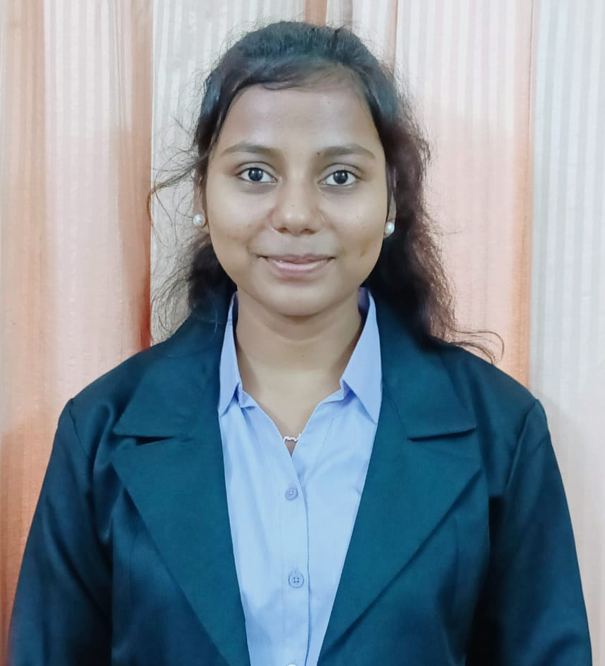

Embedded Systems | IoT | VLSI
Skilled in firmware development, sensor integration, and real-time systems using Arduino and embedded C.

Embedded Systems, IoT, and VLSI enthusiast with hands-on experience in firmware development and sensor integration. Skilled in Arduino, Raspberry Pi, and 8051, with projects using UART, I2C, and GPIO protocols. Exposure to SCADA-based systems at NTPC Ltd. and experience leading robotics team initiatives.Focused on designing efficient, reliable, and scalable hardware solutions.
Bachelor of Technology in Electrionics & Communication Engineering (ECE), Minor in Business, CGPA:8.42
Intermediate - Percentage: 74%
Digital Electronics, CMOS Basics, Logic Design, Verilog (Basic), Microprocessors (8085, 8086)
Arduino, Sensor Integration, Real-Time Monitoring Systems, Embedded C
C, C++, Python, MATLAB, Simulink, Multisim, Tinkercad
NumPy, Pandas, Matplotlib, LiquidCrystal_I2C
GitHub, VS Code, Google Cloud Platform (Basics)
UART, I2C, SPI, GPIO, MQTT
Built a Tinkercad-simulated IoT air quality system using Arduino UNO, DHT11, and MQ-series sensors; implemented I2C-based LED alert logic for 3 pollution severity levels with buzzer activation.
Designed an IoT traffic management system using Arduino UNO and Raspberry Pi with IR sensors and GPIO control; simulated a ~30% reduction in signal wait time through dynamic timing logic.
Developed an automated water level monitoring system using 8051 microcontroller with float sensors and relay-based pump control via GPIO; implemented 3-level threshold detection to prevent overflow and dry-run.
Built a real-time occupancy counting system using HC-SR04 ultrasonic sensor and Arduino with a 5-second debounce delay; displayed live count on a 16×2 I2C LCD with ±1 person accuracy.
Designed a low-cost face recognition-based attendance system for rural schools using computer vision techniques; implemented biometric authentication with real-time detection, ensuring scalable deployment in low-infrastructure environments.
Designed a distance measurement system using HC-SR04 and Arduino UNO; achieved centimetre-level precision across 2–400 cm range with serial monitor and optional I2C LCD output for robotics applications.
Developed a real-time monitoring system to detect duplicate data downloads by analyzing file access patterns; implemented an automated alert mechanism to reduce redundant bandwidth usage and improve system efficiency.
Designed a distance measurement system using HC-SR04 and Arduino UNO; achieved centimetre-level precision across 2–400 cm range with serial monitor and optional I2C LCD output for robotics applications.
Health Impacts of Climate Change and Environmental Sustainability
Published at National Conference 2025, ISBM University Chhattisgarh (January 2025). The research paper analyzes the effects of climate change on public health and healthcare systems, and explores the role of environmental sustainability in mitigating these impacts. View Certificate
Email: shambhavisinha836@gmail.com
GitHub: github.com/shambhavi-247
LinkedIn: linkedin.com/in/shambhavi-sinha-905203328
Phone Number: +91 9263334804